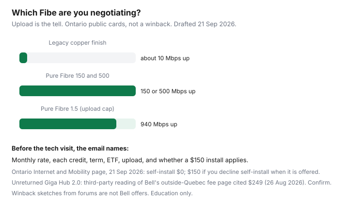

Internet · Canada
Bell Fibe Winback Playbook: Credits, Price Locks, and When Fibre Still Wins
Bell customers chase a number they saw on Reddit and discover, mid-call, that they are not on fibre. “Fibe” is a brand. The plant under it is either fibre into the home or an older service that still finishes on copper. The first pays you back in upload. The second often cannot, no matter how polite retention is. This playbook is for Eastern and central Canada households who already have Bell, or who are about to let a winback pull them back. It is not a Bell offer, and Saving Optimizer has no Bell partnership.
Disclosure: Education only. No commission if you stay with Bell or leave. Community winback figures below are self-reports. Public card prices are date-stamped and change by province, building, and whether you add mobility. Confirm on bell.ca at the civic address.
Key takeaways
- Read the upload before you celebrate a download tier. Ontario Pure Fibre cards are symmetrical on 150, 500, 3 Gbps, and 8 Gbps. The 1.5 Gbps tier is 940 Mbps up. Legacy copper-finish Fibe is a different product, often near 10 Mbps up.
- On 21 Sep 2026 Bell’s Ontario Internet and Mobility page (new customers, technology permitting) showed 150/150 at $65, 500/500 at $80, and 1.5 Gbps/940 Mbps at $85, with those rates already including a $10/month mobility credit. A Fibe 500 breakdown on the same page was $105, minus $15 for two years, minus $10 multi-service.
- Winback levers that show up in real calls: a lower monthly rate, a multi-month bill credit, a price lock for the term, a waived technician visit, and loyalty credits tied to mobility. None of them are owed to you.
- A gorgeous monthly rate on a 24-month term can still carry an internet ETF. CRTC 2026-43 did not delete Internet Code fixed-term ETFs. The optical terminal stays Bell’s.
- Do not book the tech, and do not cancel the alternative, until one email lists rate, credits, term, ETF, upload, and install terms.
Bell Fibe vs DSL legacy: know which product you are negotiating
Ask a blunt question and write the answer down: “Is this fibre to the premises, and what is the maximum upload to the hub?” Pure Fibre runs glass to the home. Bell’s own speed footnotes on the 21 Sep 2026 Ontario bundle page describe 150/150, 500/500, 3/3, and 8/8 as matched download and upload to the hub, and 1.5 Gbps down with 940 Mbps up, with the usual caveat that one device and Wi-Fi will not deliver the headline.
Older Fibe can mean fibre to a neighbourhood node and copper for the last stretch. Third-party readings of Bell’s pages (internetadvice.ca, Ontario cards dated 26 Aug 2026) put that copper-finish service around 100 Mbps down and 10 Mbps up, and distance from Bell’s equipment changes the result. If your quote says 50/10, you are not leaving money on a symmetrical gigabit. You are shopping a DSL-class line that an independent on cable, or Rogers where cable exists, may beat for ordinary downloads. Do not let a rep “upgrade” the brand name without changing the upload.

Typical winback levers: monthly rate, installation, bill credits, loyalty credits
Public cards and winback desks are different shelves. Use the public card as the anchor, not as the dream.
| Tier to the hub | Displayed monthly | What the page said about credits |
|---|---|---|
| 150 / 150 Mbps | $65 | $15/month for 2 years, and the rate already includes a $10 mobility credit |
| 500 / 500 Mbps | $80 | Breakdown shown: $105 including autopay positioning, minus $15 term credit, minus $10 multi-service |
| 1.5 Gbps / 940 Mbps | $85 | $15/month for 2 years, inside the same mobility-inclusive presentation |
| 8 / 8 Gbps | $120 | Displayed monthly on that page. The 3 Gbps dollar figure did not extract cleanly; do not invent it |
The page also said it is for new residential customers in Ontario, prices can change without notice, credits may not combine, and any service change can strip credits. A banner mentioned an extra credit of up to $25/month. The Fibe 500 math on the same page was $10, not $25. Read the line items.
Winback is what happens when you are leaving or have left. A 2026 r/bell thread included a self-report of 3 Gbps brought to about $45 a month and locked for two years after the household had moved to EBOX, with the call landing days before the termination date. Other comments on the same thread were offered $95 on 1.5 Gbps and told that was the best available, or a small cut that still lost to a flanker. RedFlagDeals has hosted recurring “$45 for 1.5 / $55 for 3” promo threads for years; those are campaign posts, not a permanent tariff, and Québec rates in the replies were not identical to Ontario. Treat every one of those dollars as a story. Your leverage is a competing quote, not a screenshot from 2024.
Levers worth naming out loud:
- Monthly rate on the tier you need, not a free jump to 3 or 8 Gbps you cannot light with Wi-Fi.
- Bill credits: dollar amount, number of months, and what happens in the month after the last credit. A two-year “price guaranteed” line is more useful than a six-month credit glued to a rising base.
- Installation. The 21 Sep 2026 Ontario page: $0 for self-install, or for a professional install when self-install is not available. $150 if you refuse self-install when it is offered. After 12 Jun 2026, a fee whose only job is “activation” with no technician is the kind of charge CRTC 2026-43 and the CCTS fee page (2 Sep 2026) say is generally prohibited. A real truck roll is different. Ask which one they are booking.
- Loyalty / mobility credits. The $10 multi-service credit is public. It helps when you already want Bell mobility. It is a poor trade if the phone plan is $20 worse than the flanker you have.
Bell MTS has said selected Manitoba residential Fibe plans rise $5 on 1 Oct 2026 (reported in the 26 Aug 2026 Ontario review’s Manitoba note). If you are in Winnipeg, read your own notice. Do not import an Ontario $80 card.
Symmetrical upload value for WFH and cloud backup
Two video calls and a cloud backup are an upload problem. A 500/500 line can send a large folder while someone is on camera. A cable plan with a similar download and 20–50 Mbps up will stall once a cloud backup starts. If your work is browser-and-email, symmetrical fibre is a luxury and a mid-tier cable plan may be the save. If you upload video, run a home server, or sit on calls while photos sync, fibre can be worth a higher monthly than the cable promo. Put that in the decision before you chase $45. A low monthly rate that drops your video calls is an expensive line.
Compare against Rogers cable and independents on the same street
Same-day, same address:
- Rogers where the plant exists. Public plans-page cards recorded 21 Sep 2026 showed Starter 150 at $75 versus $110 without the time-limited savings, Popular 500 at $90 versus $130, and Premier 2 Gig at $100 versus $160, on 24-month terms with Auto-Pay. Those are download-led cable or fibre-footprint cards. Ask Rogers for the upload. The TCO comparison is the worksheet.
- TekSavvy or Oxio if the address qualifies. Ontario comparison rows from 11 Sep 2026 are in the TekSavvy and Oxio guides. They are the alternative you read to the agent.
- EBOX, Distributel, and other Bell-family flankers sometimes ride Bell fibre at a lower retail rate. If your winback only appeared after you ordered one of them, that is normal theatre. Still get the Bell counter in writing. A flanker on the same glass can be the right stay if Bell will not match.
Contract length, ETF risk, and equipment (ONT) that you cannot BYO
The Ontario cards above are two-year price language, not month-to-month. Internet Code section G.3 still allows a disclosed fixed-term ETF that must fall to $0 by the lesser of 24 months or the end of the term. The wireless “no ETF without a phone subsidy” rule from CRTC 2026-43 is not your Fibe contract. Read the schedule. A winback at $45 that costs a fat remaining-month fee in month eight is a different product than Oxio’s no-term rate.
Equipment: the optical network terminal and the Giga Hub are Bell’s. A third-party reading of Bell’s outside-Québec fee page (26 Aug 2026) cited $249 if a Giga Hub 2.0 is not returned. Photograph the serial, use the return path, keep the receipt. You generally cannot replace the ONT with a modem you bought online. Your own router behind the hub is the usual DIY, covered in buy versus rent. Extra Wi-Fi pods are a rental decision, not a free add-on. Price them before you accept “we’ll just add a pod.”
How to confirm the offer in writing before the tech visit
- Repeat the five commercial terms and the upload. Ask the agent to send the summary before anyone is dispatched.
- Check that the term in the email matches the term you heard. Forum threads are full of “month-to-month” order confirmations on deals that were sold as two years. Fix that before install day, or you do not have the lock.
- Note the trial period if an ETF applies to a new contract: at least 15 days (30 if you self-identify as a person with a disability), with a usage cap. The 45-day mismatch cancel applies if the permanent contract conflicts or arrives late.
- If you are cancelling a different provider, align dates. Do not create a gap, and do not pay two gateways for a month because the email never came.
- Calendar the month the credits end, 45 days out. Fibre that is fairly priced still cliffs when a credit dies.
Walk when the email will not come, when the upload is copper and a cable reseller is cheaper for the way you work, or when the ETF makes the “deal” more expensive than staying put until the term ends. Fibre still wins when the written price is close and the upload is the reason you called.
Sources & date stamps
- Bell.ca, Bundles: Internet and Mobility — fetched 21 Sep 2026. Ontario new residential customers. Tiers, $10 multi-service credit, Fibe 500 line-item math, $0 / $150 install rule, credit-loss warning, autopay within 31 days.
- internetadvice.ca Bell review — Ontario Pure Fibre cards as displayed 26 Aug 2026 ($75/$90, $90/$105, $95/$110, $100/$115, $130/$160), copper-finish upload note, $249 unreturned Giga Hub 2.0 outside Québec, Manitoba $5 increase on 1 Oct 2026. Third-party snapshot; re-check Bell.
- r/bell (2026) and RedFlagDeals Fibe promo threads — self-reported winback and campaign prices. Not offers.
- CRTC Internet Code, simplified, read 21 Sep 2026 — promo disclosure, trial period, ETF declining by 24 months.
- CRTC 2026-43; CCTS fee page 2 Sep 2026 — activation versus a real technician visit; internet ETFs can remain.
Frequently asked questions
Is every Bell Fibe plan fibre to the home?
No. Bell uses Fibe for more than one plant. Pure Fibre (fibre to the home) can be symmetrical. Older Fibe that finishes on copper phone wiring is often closer to 100 Mbps down and 10 Mbps up, and distance from the equipment matters. Read the upload on the address quote before you negotiate.
Are Reddit winback prices a Bell policy?
No. They are self-reports. A 2026 r/bell thread described a 3 Gbps winback around $45 a month locked for two years after a switch to EBOX, and other posters were offered far less. Public Ontario cards are much higher. Use community numbers as a ceiling you might hear, not a figure you can demand.
Can I bring my own modem to Bell Fibe?
On fibre-to-the-home, the optical network terminal is Bell's. You generally cannot replace it with a retail DOCSIS modem. You can often put your own router behind the hub in bridge or pass-through mode. Confirm the current equipment page before you buy hardware.
Does a two-year price lock survive a speed change?
Bell's Ontario bundle page, fetched 21 Sep 2026, says any change to services may affect the price and can remove credits. A price guaranteed for two years is not a promise that every future tweak keeps the same credits. Get the lock language in the email.
Should I cancel before the tech visit?
Not until the written offer matches what you will accept, and you know the install date. A technician visit can still be billed when you decline a self-install that was available ($150 on that 21 Sep 2026 Ontario page). Confirm the path before someone is in the driveway.